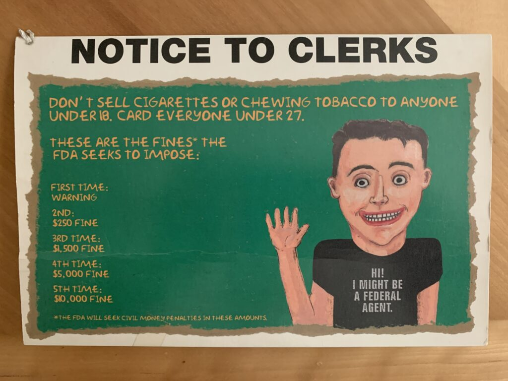
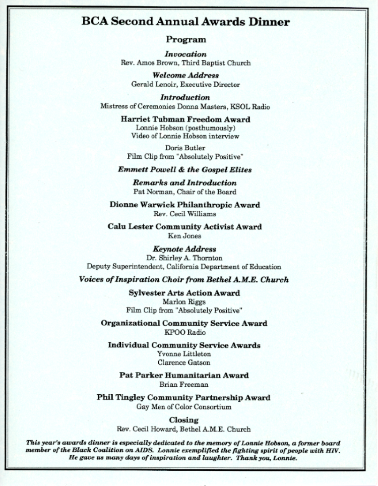
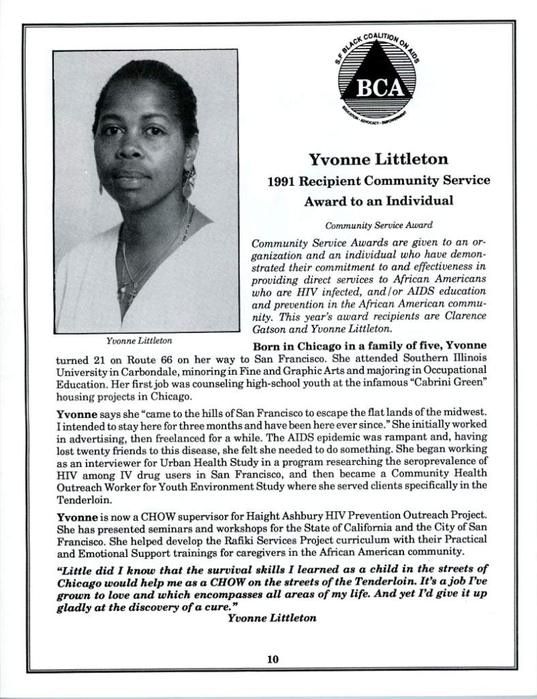

Please join us in giving a warm welcome to our new intern, Lupe Samano!
Lupe will be working on processing the Dick Fine Papers (MSS 2022-02). UCSF physician Dr. Richard H. Fine (1940 – 2015) worked at the San Francisco General Hospital and Trauma Center, where he served as chief of the adult health center for 25 years and helped found a primary care residency program to train doctors to work with poor and vulnerable patients. The collection contains yearbooks, appointment books, correspondence, clippings, audio/visual material, photographs, and ephemera.
Dick Fine Papers Intern Lupe Samano
Lupe has provided her introduction below:
Hello, my name is Lupe and I recently completed the MLIS program at San Jose State University. I moved to San Francisco in 2013 to attend San Francisco State University where I earned my BA in Philosophy and Religion. The past 6-ish years I worked with kids but didn’t find it in me to pursue teaching. During the COVID pandemic, my program organized a small library cohort, and the librarians there convinced me to pursue a degree in MLIS. I enrolled in the program shortly after and discovered that my true passion lies in archives.
I had the privilege of interning for NPS at the Presidio Park Archives and Record Center where I had a great time learning and exploring about not just archives but the history of San Francisco. I am thrilled for this opportunity to further expand my knowledge of the city’s history and gain more hands-on experience in archival work.
In my free time, I enjoy thrifting, hiking, watching my dog frolic on the beach, and starting coloring pages that I never seem to finish.
Once again we contributed to the New York Academy of Medicine’s #ColorOurCollections. We’ve created a coloring book featuring images from our rare books collection. Please download the book, color, and tweet your creations @ucsf_archives using #ColorOurCollections.
Carlton Benjamin Goodlett, PhD, MD (1914-1997) was a San Francisco newspaper publisher, civil rights leader and physician. He practiced medicine at Mount Zion Hospital (now known as UCSF Medical Center at Mount Zion) and at that time, was one of only three Black doctors in the city.
His 1997 obituary in Synapse, UCSF’s student newspaper, enumerated his many accomplishments and commitment to social justice. Goodlett graduated magna cum laude from Howard University in 1935. At the age of 23 he received his doctorate in child psychology from the University of California, Berkeley, making him one of the first Black students to receive a PhD from the UC Berkeley Department of Psychology. He went on to receive his medical degree from Meharry Medical College in Nashville, Tennessee.
Goodlett’s legacy includes leading boycotts of businesses that discriminated against people of color and participating in student protests at San Francisco State University. He was also a co-founder of the San Francisco Young Democrats. According to the San Francisco Chronicle, “Until the emergence of the Black Panther Party in the late 1960s, Goodlett was the dominant figure in San Francisco’s civil rights movement in securing jobs for African Americans and appointments to important city commissions that blacks had never held.”
Another notable element of the Synapse article is a featured a drawing of Dr. Goodlett by the American graphic artist Emory Douglas (b. 1943). Douglas was the minister of culture and revolutionary artist for the Black Panther Party. He designed the Party’s newspaper, The Black Panther, and was responsible for the publication’s iconic imagery.
For additional resources on Carlton B. Goodlett and Emory Douglas:
Donated by her husband, Dennis Hirschfelder, the Arlene Hirschfelder Collection was accessioned into the UCSF Archives and Special Collections this year. Arlene Hirschfelder was an educator and scholar who authored numerous books and other resource materials on tobacco control specifically as it relates to teenagers and young adults. She passed away in 2021.
The collection contains tobacco control resource materials that Hirschfelder authored such as A Century of Tobacco & Smoking (1998) which chronicles US tobacco history from the 1870s to 1990s with a focus on the marketing strategies of the tobacco industry.
The collection also includes materials that she assembled such as an anti-smoking board game, posters, cigarettes, candy cigarettes, and other ephemera.

Hirschfelder was also a Native American studies scholar and advocate. Her book collection of Native American and Indigenous subject matters was donated to Northwestern University’s Center for Native American & Indigenous Research (CNAIR).
The Archives and Special Collections reading room is now open Wednesday–Friday from 9 am–noon and 1–4 pm by appointment only. For non-UCSF visitors, please see the following information:
Request materials and make appointments using our new request system; it’s easy to request materials and make reading room appointments. After an initial sign-up, you can track your requests and appointments.
The requirements for access to reading room UCSF Library facilities are currently only open to those with a UCSF ID. External researchers can make appointments to review materials in the Archives and Special Collections reading room. At the time of appointment, visitors will be met at the entrance to the library by the archives staff and accompanied to the reading room. Any individuals visiting the UCSF campus facilities are required to follow UCSF campus guest requirements.
The Black Coalition on AIDS (BCA) records are among the AIDS community-based organizations records (MSS 98-49) housed with the UCSF Archives and Special Collections. These records were assembled as part of the UCSF AIDS History Project, acquired with the goal of documenting the beginning of the AIDS epidemic and the San Francisco community response to it.
The Black Coalition on AIDS was established in 1986 to address the needs of the African American community in the early years of the AIDS epidemic and “to ensure Black people would receive appropriate services and be adequately represented in policy decisions.” It is still active today and was renamed the Rafiki Coalition for Health and Wellness in 2015 to reflect its expanded health education and health support services.
The Black Coalition on AIDS (BCA) records housed with us include meeting minutes, handwritten notes, programs from their first two annual awards dinners, newsletters, position papers, and proposals.
The honorees featured in the annual awards dinner programs for the BCA Second Annual Awards Dinner in 1991, captured my interest. The event highlighted the achievements of African American activists from the Bay Area and since February is Black History Month, it seemed timely and fitting to share a bit of information about some of the celebrated individuals.

Ken Jones received the Calu Lester Community Activist Award for his work as the Executive Director of STOP AIDS Project, Secretary of the AIDS Life Lobby, Vice Chair of the Lesbian and Gay Caucus to the State Democratic Party, and the founder of BIKE-A-THON for AIDS among many accomplishments. Jones was a veteran of the Vietnam War. He went on to work on police reform issues in response to the 1991 Rodney King beating and in 2011, he served on the citizen review board of the BART Police Department following the BART police killing of Oscar Grant. Jones passed away last year.
Yvonne Littleton received the Individual Community Service Award for her community health outreach work for the Haight Ashbury HIV Prevention Outreach Project. In addition to her public health work and background, Littleton trained as an artist. She was one of the 7 muralists who painted the Maestrapeace Mural on the Women’s Building in the Mission District in 1994. She also worked as a commercial artist and a stage and lighting designer.

The video artist, poet, activist, and educator, Marlon Riggs received the Sylvester Arts Action Award. I was first introduced to Riggs’s work while I was working at the San Francisco Museum of Modern Art Archives. In 1992, Riggs’s Affirmations won the 2nd Society for the Encouragement of Contemporary Art Video Award. His works can be found in the collections of the Museum of Art Museum and the Whitney Museum of American Art and in recent years, several arts organizations have mounted exhibitions honoring him and his work:
Tongues Untied at the Museum of Contemporary Art in 2015
Last year, the Criterion Collection, which had in recent years come under some scrutiny for its dearth of African-American directors, released the box set of his works, The Signifyin’ Works of Marlon Riggs.
Riggs died in 1994 at the age of 37 from AIDS.
Archival records function as time capsules and allow you a glimpse into a specific moment in time and place. And how one document, an event program, can be an introduction to people and places, inviting you to move them beyond just the records. I love this about my job.
Once again we contributed to the New York Academy of Medicine’s #ColorOurCollections. We’ve created a coloring book featuring images from our collection of Japanese woodblock prints. Please download the book, color, and tweet your creations @ucsf_archives using #ColorOurCollections.